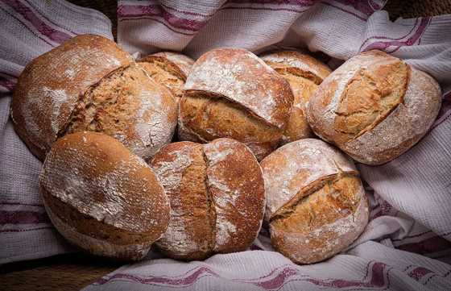
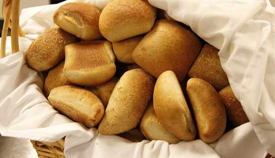
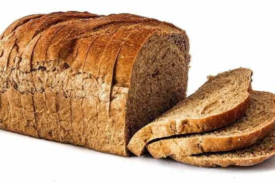
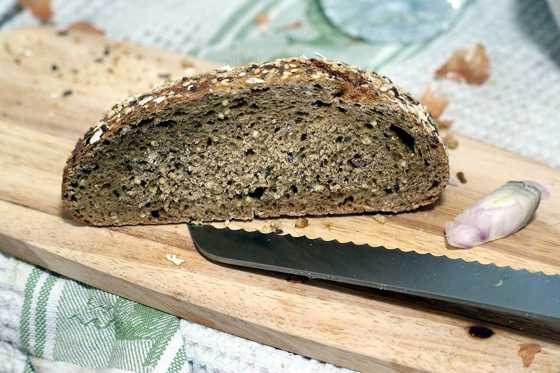

ぱんや / 群馬県前橋市北代田町
山の如く、パンを。
山のようにどっしりと積まれたパンが、毎日の食卓を支えてくれる。そんなパン屋のイメージで、このページを作りました。



店のこと
確認できたこと、まだ準備中のこと
「ぱんや やまの如く」は、群馬県前橋市北代田町にあるパン屋さんです。Instagram(@yamano5109)で日々の様子が発信されています。
店名の由来やオーナーの想いは、確認できていません。「山の如く」という響きから、山のようにどっしり、たっぷりのパンという姿を思い浮かべ、このページのコンセプトにしました。これは制作側のイメージで、お店の考えではありません。

パン
並ぶパンのイメージ
取り扱い商品・価格・営業時間・定休日はすべて準備中です。以下は雰囲気をお伝えするフリー素材のイメージで、お店の商品ではありません。





イメージ
麦と火と、山の景色
パンのもとになる小麦、焼き上げる火、そして「山」を思わせる風景のイメージ写真です。


口コミ
お客様の声(イメージ例)
イメージ例どっしりしたパンが並んでいると、ついあれもこれもと選びたくなりそうです。
イメージ例「やまの如く」という名前の響きが印象的で、いつか立ち寄ってみたいお店です。
イメージ例営業時間などの詳しい情報が分かったら、朝のうちに買いに行ってみたいです。
上の3件は制作側が作成したイメージで、実在のお客様の声ではありません。